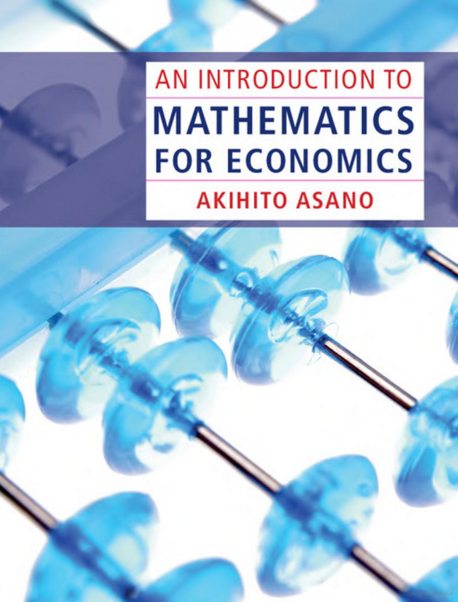
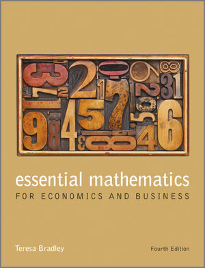
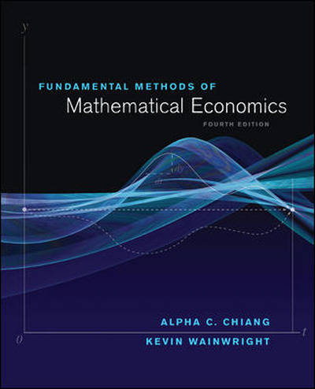
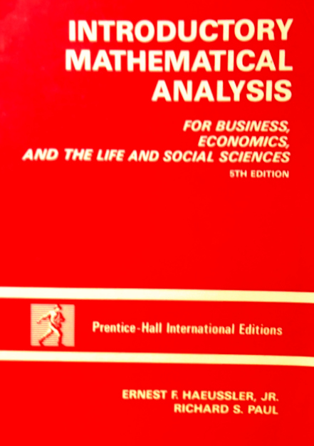
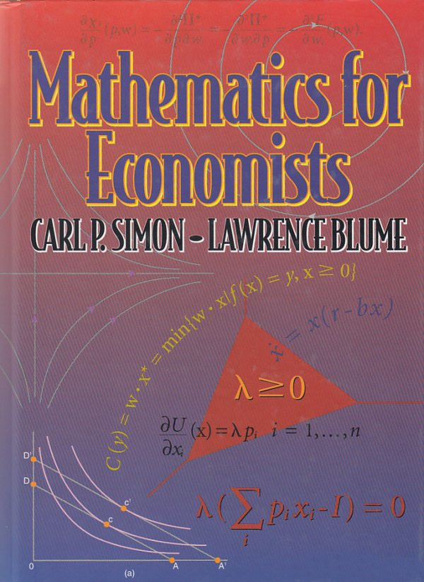
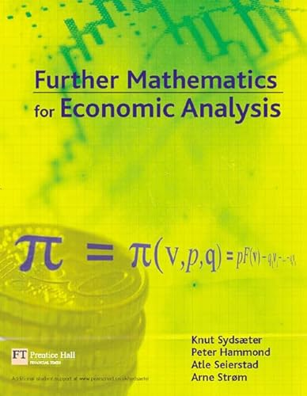

Bibliography#
Required and recommended books#
Note
As mentioned in the Class summary, for all books, the edition you consult does not matter much. The only operational differences will possibly be the organisation of material within the book, and differences in the relevant chapter titles or chapter numbers, or both.
The references in the class summary and within each lecture will be to the relevant chapters for the edition of each book cited in this bibliography. The images below, where possible, are for the same editions, but referring to later editions is perfectly fine.
Main book#
The main book of the course is [Sydsæter, Hammond, Strøm, and Carvajal, 2016]:
{kind=link}
Other books for reading#
     {kind=link}
{kind=link}
{kind=link}
{kind=link}
{kind=link}
{kind=link}
{kind=link}
Reference list#
AA Alchian and WR Allen. University economics: Elements of inquiry. Wadsworth Publishing Company, 1972.
AA Alchian and WR Allen. Exchange and production: Competition, coordination and control (third edition). Wadsworth Publishing Company, 1983.
A Asano. Mathematics for economics. Cambridge University Press, 2013.
LM Ausubel and RJ Deneckere. A generalized theorem of the maximum. Economic Theory, 3(1):99–107, 1993.
J Banks, G Elton, and J Strantzen. Topology and analysis: Unit text for MAT3TA (2009 and 2010 edition). Department of Mathematics and Statistics, La Trobe University, 2009.
T Bradley. Essential mathematics for economics and business (fourth edition). John Wiley and Sons, 2013.
KE Case, RC Fair, and SM Oster. Principles of Economics (Twelfth Edition) (Global Edition). Pearson Education, 2017.
AC Chiang and K Wainwright. Fundamental methods of mathematical economics (fourth edition). McGraw-Hill, 2005.
D Corbae, MB Stinchcombe, and J Zeman. An introduction to mathematical analysis for economic theory and econometrics. Princeton University Press, 2009.
RH Frank. Microeconomics and behavior (sixth edition). McGraw-Hill, 2006.
J Gans, S King, N Byford, and NG Mankiw. Principles of microeconomics (seventh Asia-Pacific edition). Cengage Learning Australia, 2018.
H Gravelle and R Rees. Microeconomics (third edition). Pearson Education, 2004.
EF Haeussler Jr and RS Paul. Introductory mathematical analysis for business, economics, and the life and social sciences (fifth edition). Prentice-Hall, 1987.
PR Halmos. Naive set theory. D Van Nostrand Company, 1960.
DS Hamermesh. Economics is everywhere (second edition). McGraw-Hill-Irwin, 2006.
P Heyne. A student’s guide to economics. Intercollegiate Studies Institute (ISI) Books, 2000. Edited by JA Eglarz.
PL Heyne, PJ Boettke, and DL Prychitko. The economic way of thinking (thirteenth edition). Pearson Education, 2014. The Pearson New International Edition.
J Hirshleifer, A Glazer, and D Hirshleifer. Price theory and applications: Decisions, markets, and information (seventh edition). Cambridge University Press, 2005.
AN Kolmogorov and SV Fomin. Introductory real analysis. Dover Publications, 1970. Translated and Edited by RA Silverman, The 1975 Dover Edition (an unabridged, slightly corrected republication of the original 1970 Prentice-Hall edition).
T Kunimoto. Lecture notes on mathematics for economists. Unpublished, McGill University, 2010.
E Malinvaud. Lectures on microeconomic theory. North Holland Publishing Company, 1972. Advanced Textbooks in Economics Volume 2; Translated by Mrs. A. Silvey.
NG Mankiw. Macroeconomics (fifth edition). Worth Publishers, 2003.
JM Perloff. Microeconomics with calculus (third edition) (global edition). Pearson Education Limited, 2014.
LC Robbins. An essay on the nature and significance of economic science (third edition). New York University Press, 1984. With a foreword by WJ Baumol. The first edition of this book was published in 1932.
J Shannon. Mathematics for business, economics and finance. John Wiley and Sons, 1995.
C Simon and L Blume. Mathematics for economists. WW Norton and Co, 1994.
K Sydsæter, P Hammond, A Seierstad, and A Strøm. Further mathematics for economic analysis. Prentice-Hall / Financial Times (Pearson), 2005.
K Sydsæter, P Hammond, A Strøm, and A Carvajal. Essential mathematics for economic analysis (fifth edition). Pearson Education, 2016.
RV Vohra. Advanced mathematical economics. Routledge, 2005.
RN Waud, P Maxwell, and J Bonnici. Macroeconomics (Australian edition). Harper and Row Publishers, 1989.